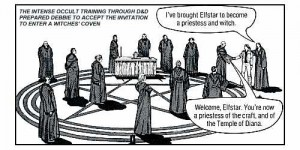

Sean Sellers: The Devil and Death Row
Shortly before his death by lethal injection, Sean Sellers would express deep annoyance that so many people still insisted upon making such a big deal of the 3 murders he had committed — two of them his own parents, the other a convenience store clerk named Robert Bower. “I’m amazed at the self righteousness I still encounter from people who don’t even know me,” Sellers wrote in his journal, February 1, 1999, two days before death. “People,” he addressed his future readers, “for one moment, get your eyes off my own sins and look at your own. You want to harp on something that happened 13 years ago. Thirteen years! If you didn’t know Robert Bower or Mom and Dad then it doesn’t even affect you. It’s so easy to appear righteous next to a murderer, but here are two facts in the Kingdom of God: First of all, I repented of those sins 13 years ago soon after they happened, and I’ve been serving God ever since. And second of all, it isn’t ME you have to compare yourself to, it’s God’s holiness. Don’t look at my sin and think yourself clean, look at GOD!” [1]
Only sixteen years of age at the time of his crimes in 1985, Sellers remains the youngest criminal sentenced to death in the United States since the reinstatement of the Death Penalty in 1976. That troubling fact, along with his ostentatious jailhouse conversion, made him an instant cause célèbre for anti-Capital Punishment activists, and a poster boy for apocalyptic crusaders who saw in him a confused and helpless by-product of uniquely troubled times.
During his incarceration, and up till his execution, Sellers regularly gave interviews and appeared on high-profile daytime talk shows, lending the credibility of Death Row testimony to the irrational moral panics of the time. Blond-haired, baby-faced and articulate, Sellers became a celebrity case study in the presumed deleterious effects of modern culture upon malleable youths. He offered the convincing image — thoroughly exploited by tabloid media — of a normal boy perverted by unseen dark and deceptive influences outside of his understanding or control.
For 13 years, the harried Sellers was aggravated by inquiries seeking reasons for his actions. The truth was, after the swarms of experts, self-interested cons, conspiracy theorists, and mental health professionals got through with him, Sellers himself was probably as little qualified as anybody to divine his own motives.
Dungeons & Dragons and Satan
According to testimony, it was a mere homicidal curiosity that motivated Sellers to “see what it feels like to kill somebody”. In September of 1985, he had acted upon this impulse when he shot and killed Bowers with a .357 magnum.
Sellers would oscillate between different reasons for this brutal act as his defense tactic would shift, and depending on which audience he was addressing. In one version, he would claim that it was an act of revenge — the victim had denied a sale of alcohol to an under-aged friend, and had been particularly rude in his refusal. In another telling, Sellers would explain that the murder was committed as a natural outgrowth of his commitment to Satanism at that time; This twisted religion demanded (and he was powerless to refuse) that he break all ten of the Ten Commandments, including, of course, “Thou shalt not kill.” In yet another version, Sellers was utterly unaware that he had committed murder at all — he was completely amnesiac for the whole sordid affair — and found himself shocked and confused that such savagery could have possibly overtaken his senses.
Six months after the convenience store slaying remained unsolved, Sellers shot and killed his mother and stepfather as they slept. His reasons for this were just as unclear. Claiming amnesia for this crime as well, Sellers would nonetheless also claim to know his motive: his mother disapproved of, and was attempting to keep him separated from, his new girlfriend. Alternately, of course, the rigorous demands of Satanic worship were again to blame. Sellers would expand upon the Satanism claim turning it into nothing short of a classic devil-made-me-do-it defense, alleging to be possessed of a demon when the murders took place. Through occult rituals, Sellers claimed to have had invited a demon, named Ezurate, into his body. These claims, while seemingly mutually exclusive, would also eventually blend into one confused narrative in which Sellers, overcome by Satanic influences, committed murder outside of his conscious awareness, recalling the deeds and mundane motives only after deep introspection and spiritual conversion to Christianity.
Reflecting on his early incarceration and alleged amnesia, Sellers stated, “I thought I would be [set] free because I didn’t think I was guilty. But when I got the death penalty, I wanted to know why,” he said. “I kept meditating and thinking, going back in time and then forward again bit by bit. When I hit a blank spot, I forced myself to remember. I think now I was two people—Sean and Ezurate.” [2]
Unconvincingly, Sellers’s legal counsel argued that an “addiction” to the role-playing game Dungeons & Dragons (D & D) had “dictated his actions and disconnected him from any consciousness of wrongdoing or responsibility.” [3] Dungeons & Dragons, according to this narrative, had led Sellers to Satanism. Satanism, if not Satan, drove Sellers to murder. Sellers had been lured into the depraved world of the occult, his young mind warped and confused by the twisted practices of some hidden fanatical society. Dungeons & Dragons had proved a gateway into a world of ritualized, anti-human, criminal activities. It was a poor attempt at a more secular version of Sellers’s own demonic possession claim.
It was a weak defense, to say the least, but in a matter of life-and-death, many otherwise rational advocates for Sellers’s continued existence were willing to indulge whatever exculpatory “evidence” his defense might cite. Human Rights advocates, horrified that Sellers was facing execution for a crime he’d committed as a juvenile, weren’t about to call bullshit on any efforts toward removing Sellers from responsibility for his actions.
Geraldo and the Satanic Panic
Sellers’s eagerness to blame Satan for his crimes drew forth hordes of evangelists, self-proclaimed “occult crime” experts and public paranoids bent upon establishing Sellers’s story as irrefutable proof of the elusive Satanic Cult threat. Throughout the 1980s and into the 90s, sensational tabloid media embraced a conspiracy theory of organized Satanic cult crimes for which Sean Sellers promised much-needed first-hand testimony and validation. Long after the Satanic Panic had been debunked as a hysterical creation of opportunistic liars and delusional paranoiacs, various talk show hosts, including Oprah Winfrey and Geraldo Rivera, still paraded the Sean Sellers story as a real-life cautionary tale demonstrating Satanism’s insidious and corrupting power to turn normal, intelligent teens into reckless and brutal killers. Sellers, they warned, was just one of countless youths to be soured by a codified doctrine of Evil.
The problem, of course, was that there was no such doctrine to speak of. Sellers himself described his “Satanism” as a personal amalgamation of randomly incorporated disparate interests and disciplines, including his training with the Civil Air Patrol (CAP).
“I combined all I had learned into a single philosophy,” Sellers wrote: “The structure of D & D and CAP, the discipline and training of Zen and Ninjutsu, and the ideals, concepts, and ritualistic practices of satanism […]” [4]
The Satanism Sellers claimed to be drawing from was that of Anton Szandor LaVey’s Satanic Bible penned in 1966. However, Sellers’s ad hoc “philosophy” clearly had as little to do with LaVey’s religio-atheistic celebration of “rational self interest” as it did Zen, or any of the other component parts he credited. Nowhere in his Bible did LaVey exhort readers to break the Ten Commandments, nor were his rituals contrived as channeled communions with supernatural beings… rather, LaVey’s rituals were meant to be enacted as cathartic psychodramas. Further, LaVey didn’t believe in Satan as a conscious entity, but regarded “Satan” as a symbol for one’s inner self and motivating desires. Satan, to LaVey, was not a depersonalizing, subjugating force, but the exact opposite.
In fact, Sellers’s obsession with learning the Art of the Ninja — with it’s focus on stealth assassination — could more plausibly have been inspirational in the murders he committed (However, hysterical suspicions of secret, prowling ninja hordes were absent from talk show discourse at the time). The only organized Satanic practice Sellers spoke of was one he himself attempted to assemble — a dysfunctional kid’s club he named “the Elimination”.
Nonetheless, on his now notorious Halloween television special, Devil Worship: Exposing Satan’s Underground, aired in 1988, Geraldo Rivera would present Sean Sellers as living proof that “a nationwide network of Satanic criminals exists”.
“Whether a Satan exists is a matter of belief,” Rivera began after the opening montage, “but we are sure that Satan-ism exists. To some, it’s a religion, to others it’s the practice of evil in the Devil’s name.”
After exploring the disastrous influence of “heavy metal music”, attempting unsuccessfully to fit unrelated crimes into a common narrative, and intrepidly digging through abandoned urban hang-outs to reveal “satanic” graffiti, Rivera introduced a shackled Sean Sellers, via satellite, from prison, to the viewing audience.
“Sean is a kid who murdered his mother, murdered his stepfather, murdered a convenience store clerk…”, Rivera explained to the viewing audience.
Then, turning to the broadcast of Sellers, “what did Satanism have to do with it, Sean? What did Satan, do you feel, have to do with, first, your murder of that convenience store clerk?”
Sellers: “Satanism was… well, the murder was because… it was a, um… how do I say this so that you can understand it? — It was a sacrifice to prove allegiance to Satan… to prove my hatred toward society and everything…”
Geraldo: “Well, hatred toward society is one thing, Sean, but how does Satan make you commit murder?”
Before Sellers could answer an off-screen voice abruptly interjected on Sellers’s behalf, and the camera panned back, awkwardly, revealing a well-dressed morbidly obese man sitting by Sellers’s side. Geraldo introduces him as “Tom Wedge, an expert in Satanism who is with Sean in the Oklahoma State Penitentiary.”
Tom Wedge: “Well, Geraldo, Sean in that particular situation — uh, Sean Sellers — he had broken every one of the Ten Commandments except ‘thou shalt not commit murder’, and after he worshipped before the altar and asked for power from Satan, he went out to do this. Technically, it was a human sacrifice.”
Rivera asked none of the obvious questions that may have been asked by anybody truly concerned that Sellers might have been part of a larger network… such as, perhaps, was there a larger network? Whose idea of Satanism was this? Who were they? Where were they? Could they be directly implicated in the murders Sellers had committed?
Also, why had Wedge answered for Sean? Why was he there? Was he merely using the occasion as a shameless platform for self-promotion (having himself authored a book about Satanic cult crime), or was he, in fact, coaching Sellers?
Apparently undisturbed by such questions, Rivera dismissed Sellers, continuing with his presentation of more and more nebulous revelations of presumed Satanism. He returned to Sellers toward the end of the program — with Tom Wedge suddenly conspicuously absent — again failing to ask him anything productive or meaningful, allowing Sellers to advertise his glorious redemption. “There is no other way out of Satanism except through Jesus Christ,” Sellers declared with an air of martyrdom and the moral authority of a repentant sinner. Sellers knew exactly where he had gone wrong, and only wanted thereafter to prevent other young people from traveling that same savage road.
“Do you believe in the Devil?” Rivera asked mysteriously, suggesting that he hadn’t really been listening to anything Sellers had said.
“I believe in the Devil,” Sellers replied, “but I don’t worship the Devil. I’m a Christian. I stand up boldly and proudly and proclaim my faith in Jesus.” And then, to reiterate, “There is no way out of Satanism except through Jesus Christ.”
Sellers was clearly speaking of a supernatural Satan while Rivera was pretending to be exploring a real-world issue of Satanism… a Satanism that is presumably practiced regardless of the existence, or nonexistence, of an entity of that name. And this was not a mere difference in semantics for which the facts would remain the same regardless of the context in which they were approached. Sellers was claiming to believe that he had taken his inspiration from Satan himself, where Rivera was inappropriately attempting to fit him into a story about a hidden network of Satanists.
As unimpressive and unbelievable as Geraldo Rivera’s Satanism special was, it nonetheless helped further fuel the credulous anti-Satanism uproar of the time. Sellers was soon receiving fan mail and drawing the support of those who were touched by his dramatic conversion story. He became the topic of a book, Devil Child — the cover shamelessly splashed with a bold “AS SEEN ON GERALDO” — which expanded upon the claims of a ubiquitous, world-wide Satanic society. Without providing a source for their claims, the authors wrote:
Those who choose to believe that Satanic practitioners do not inhabit their town or city, do not shop in their grocery marts, do not occupy the car in the passing lane, might take note of some figures. In 1976 the number of active Satanists in the U.S. numbered nearly half a million. By 1985 that figure almost tripled. No community is untouched. No boundary is uncrossed.
Who, then, are these Satanists who invade our protective spiritual armor? They are business professionals, politicians, even priests. They deliver your mail, cut your hair, pump your gas.
They are your children. [5]
Theories of Satanism, Secular and the Superstitious
Sellers himself would publish a book, Web of Darkness, with the help of a woman named Mary K. Haynes, who was moved to reach out to Sellers following his appearance on the Geraldo Rivera show.
Haynes, too, used Sellers’s story to promote the conspiracy theory of a Satanic cult underground, presenting Sellers as an unwilling laborer in their mafia-like operations. “He didn’t think there was a way out of it,” Haynes claimed in an interview, “The Satanists told him there was no way he could get out. They said they would kill him if he tried,” she stated, in direct contradiction to Sellers’s own account of an independently derived Satanism.
According to Haynes, Sellers and his family went to several religious leaders to try to help him out of the occult, but to no avail.
“He finally gave up trying to get out. He decided to invite demons into his body, but he felt like they wouldn’t come. He held a ritual with another Satanist to ask the devil what he needed to do, and the devil told him he needed to make a sacrifice,” Haynes said. [6]
In his book, Web of Darkness, Sellers summarized his life and crimes in one brief chapter before shifting to a highly generalized discussion of an Occult Conspiracy. Druidism, the Illuminati, Freemasonry, and the New Age Movement are all but parts of “Satanism”, which “began after the flood of Noah in the city of Babel.” Sellers explains that the primary text used by biblical-era Satanists was known as The Necronomicon. However, he concedes, “[t]here is evidence to support the contention that the Necronomicon is a hoax — an imaginative book put together by [horror author] H.P. Lovecraft enthusiasts.” But this doesn’t matter, because “the book’s ideals are completely evil and people, especially teenagers, have taken the book seriously enough that its rituals and practices are being performed in many places. Thus, hoax or not, […] Satan uses this false worship to accomplish his goals.” [7]
Here again, Sellers underscored the divide between a secular theory of satanic cult crimes and a supernatural occult conspiracy. The supernatural perspective is unconcerned with tangible evidence of a Satanic doctrine. From a supernatural viewpoint, Satanism holds an inherent, not subjective, value. Sellers reached Satanism by way of an idiosyncratic path, but regardless of Sellers’s own theory of Satanism, there could be only one Satanism in practice. Satanism is a conduit by which Satanists channel the intent of Satan. Benign Satanisms — according to the supernatural perspective — simply can not exist. Theological interpretations of a compassionate Lucifer… the LaVeyan creed of law-abiding “rational self-interest”… these can only be artifice. Through deception, Satan insidiously inserts himself into the lives of the naive, leading them inevitably to criminal depravity… whatever the claims, or even beliefs, of “Satanists” themselves might be. It’s magical thinking, no more enlightened than a belief in the spiritual corruption of the left-handed. It is the primitive illogic of the affrighted witch-hunting mob, to which Geraldo directly appealed.
The conspiracy theory of a Satanic cult criminal network — still alive and well in certain paranoid subcultures today — was, is, and always has been, the product of pure superstition. It is a superstition that has given occasional rise to characters like Sean Sellers, or Satanic serial-killer Richard Ramirez, who both attached themselves to a pre-fabricated framework — the idea of Satanism constructed by the hysterical anti-Satanists themselves — to express their individual rejection of social norms and/or cultivate an air of mysterious horror around them. “Satanism” is merely a convenient label which offers no real understanding of their personal defects, struggles, or subjective experiences… and it further obfuscates understanding by implying their actions to be driven by membership within a larger Satanic society who collectively share, and silently endorse, their criminal psychopathy.
Multiple Personalities and the Occult Conspiracy
Swarmed by conspiracy theorists and self-aggrandizing crusaders, Sellers was never guided toward any possibility of constructive introspection, reality-based confession, or even away from delusion. The situation wasn’t improved in 1992, six years after his trial, when three physicians, secured by Sellers’s appeals attorneys, attempted a scientific quantitative measure of Sellers’s psychological construct by way of electroencephalogram (EEG) testing. The results, it was claimed, proved conclusively that Sellers suffered from the condition of Multiple Personality Disorder (MPD). Despite there being no diagnostic criteria for determining MPD (or any other psychiatric disorder) by way of EEG [8], these alleged results were often described as “incontrovertible”, even by the judges who eventually denied Sellers’s appeal. Writing for the United States Court of Appeals, Tenth Circuit, three judges produced the following opinion, establishing themselves as unfit for their stations from start to finish:
“Although troubled by the extent of the uncontroverted clinical evidence proving petitioner suffers from Multiple Personality Disorder, now and at the time of the offenses of conviction, and that the offenses were committed by an “alter” personality, we are constrained to hold Petitioner has failed to establish grounds for federal habeas corpus relief. Even though his illness is such that he may be able to prove his factual innocence of those crimes, we believe that he must be left to the avenue of executive clemency to pursue that claim.”
The statement is flawed on every level. First, the idea that an appeals court would conclude that evidence of “factual innocence” was not their problem to consider is staggering. But beyond that, the very idea of Multiple Personality Disorder is itself no more credible than Sellers’s own Devil-made-me-do-it defense, dressed up in cheap scientific-sounding jargon. In fact, the disorder, as a naturally occurring condition, has no basis in science whatsoever, despite a subculture of therapists and clinicians who have lobbied successfully for its continued inclusion in the American Psychiatric Association’s (APA) Diagnostic & Statistical Manual (DSM). It’s this therapeutic subculture — Multiple Personalities “experts” and their clients — that today still retains the remaining bulk of true believers in the idea of a Satanic cult conspiracy, and it should have been no surprise that the disorder would eventually work its way into the mythological defense of Sean Sellers.
Typically, it works the other way round — a person diagnosed with Multiple Personalities undergoes treatment whereby he or she “recovers” “memories” of being involved in Satanic cult practices. Wherever one finds the pseudoscience of MPD (now known as DID — Dissociative Identity Disorder) delusions of conspiracy are never far behind. The theory of Multiple Personalities holds that past traumas of abuse often prove too horrific for the mind to consciously cope with, and are thus relegated to repressed compartments of the mind which take on lives — personalities — of their own… unbeknownst to, and intermittently superseding the consciousness of, the victim. In the case of Sean Sellers, the worst the defense could say of his childhood was that he was moved around a lot, making it difficult or impossible for him to develop close interpersonal relationships. After the MPD diagnosis, however, his childhood was reconstructed into a narrative of severe abuse and forced depravity. Amnesty International, arguing for Sellers’s clemency, reported in 1998:
“Violence was apparently approved of and practised in Sean Sellers’ family. His mother and stepfather always carried guns whenever they travelled. One of his uncles would take him hunting and try to teach the young boy to step on an animal’s head and pull on its legs to kill it. Sean Sellers later recalled to a psychiatrist how he saw his uncle put an axe on a wounded racoon’s head and pull on its legs until the head tore off. The young boy was frequently called a ‘wimp’ by his uncle and chastised by his stepfather for refusing to take part in these violent acts.
At his future trial for murder, the jury would be left unaware of any of these details of his childhood.” [9]
Given the nature of repression, the fact that these details went unremembered previously was to have been expected. MPD therapy typically focuses on these presumed repressed traumas, attempting to draw them to conscious realization by way of hypnotic regression or other methods. “Memories” recovered in this fashion have the remarkable tendency to not only match the therapist’s own expectations, but also to be entirely false — though, tragically, those who surface them can often become quite convinced of the memory’s legitimacy. These recovered memory therapies are the same methods by which experts in “abductology” retrieve “memories” of extraterrestrial abductions of human subjects, and this is the same “science” by which past lives are revealed to subjects who are regressed to pre-birth existences. In fact, there is no method by which a therapist can reliably distinguish between a true recovered memory (if such a thing exists at all) and confabulatory delusion.
The Passion of Sean Sellers
Sellers’s unfortunate parents suffered a type of double death. First, by way way Sean’s puzzlingly unceremonious “ritual murder”, and later as their memories were revised and defamed through new “insights”. The logic was circular: MPD “proved” that Sellers had been abused, and “recollections” of abuse in turn confirmed MPD to be the logical diagnosis. By 1998, Sellers had a dedicated fan club, the Friends of Sean, who embraced the narrative of Sellers the abused child. The ex-husband of one of the Friends of Sean, in a 2011 essay, recalls an Oklahoma Coalition to Abolish the Death Penalty (OCADP) meeting his (then) wife dragged him to just months before Sellers’s execution:
“There had been a clemency hearing, and Sellers’s step-siblings had testified against him. He had killed their father in cold blood, and they had never accepted his so-called conversion to Christianity. The OCADP folks sat around and discussed, with typical liberal venom, what awful people Sellers’s step-siblings were. They then went on to talk about what a bad mother Vonda had been, and what an asshole step-father Lee had been, and how they had pretty much deserved what they’d gotten.” [10]
There was a certain dissonance, it seems, with the OCADP in that they couldn’t simply oppose the Death Penalty entirely, and in all cases — as they claimed to — but apparently needed to exonerate the convicted of wrongdoing as well. And all of this, of course, ignored the unquestioned innocence of Robert Bowers, as well as Sean’s own earlier testimony expressing fondness for his blameless victims. However, at this point, Sellers’s dedicated flock — whom he addressed in monthly newsletters in which he would impart spiritual wisdom to those who lacked the insights he had gained — saw in Sellers a model of Christian virtue… not in spite of his previous depravity, but because of it.
Sellers, at times, seemed to revel in the senseless savagery of his past deeds, but only to underscore the miracle of his redemption — from “Child of Satan [to] Man of God” (as the dust-jacket of his book, Web of Darkness, would state it). When asked in interviews what he did after shooting his parents, Sellers gave a similar answer multiple times, “I laughed. I giggled a hideous giggle. I just stood there and giggled as I watched the blood pour from my mother’s head. I felt… relief. I felt this big burden come off of my shoulders, like at last I was free.” [11]
In a certain backward, religious rationale, Sellers’s own crimes made him a martyr…
Execution
After the mid-nineties, fears of a Satanic cult conspiracy gave way to reasoned investigations, debunking it for the mob hysteria that it always was. Against expectations, even Geraldo, in 1995, publicly denounced the witch-hunt, flatly admitting that “many innocent people were convicted and went to prison” based on false “recovered memory” testimony [12]. Sean Sellers’s Satanism regained its proper context as a tale of individual homicidal confusion. Nobody had conspired to covertly author Sellers’s actions. Retrospective analysis of his defense — with its attributions of subliminal, soul-destroying powers latent within Dungeons & Dragons gameplay — became embarrassingly dated and more obviously ridiculous. Sellers’s true mental condition had never been competently diagnosed or explored.
With nothing resolved, no sensible answers obtained in 13 years of inquiry, and in the face of international condemnation, Sellers was strapped to a gurney on February 04, 1999, to die by lethal injection. He addressed his onlookers with muted spite: “All the people that are hating me right now and are here waiting to see me die, when you wake up in the morning, you’re not going to feel any different. You’re going to hate me just as much tomorrow as tonight,” he stated in parting words that his attending stepsister would later describe as “arrogant.”
“When you wake up and nothing has changed inside, reach out to God, and He will be there for you. Reach out to God, and He will heal you. Let Him touch your hearts. Don’t hate all your lives.” [13]
At 12:17 a.m. Sean Sellers departed from the living, and the United States joined a short, ignoble list of countries that have sanctioned the execution of a juvenile since 1990 — the other 5 being Iran, Yemen, Pakistan, Saudi Arabia, and Nigeria. And while the European Union, various dignitaries, and celebrities would openly comment upon this state of affairs disparagingly, none would confront the more disturbing questions that the Sean Sellers case would present in regards to the health of our enlightened civility… Namely, the question of witch-hunts, and how the fear of supernatural criminality could have encroached a generalized panic into our informed public, finding an audience within the hallowed halls of secular law. How does a debunked, delusion-creating diagnosis manage to retain, even today, a presence in an allegedly science-respecting Psychiatric manual? How did conspiracy theory overshadow and obscure every aspect of the Sean Sellers story, even as secular authorities sought to piece it all together?
A fading Death Row celebrity, Sellers drifted from public memory almost as quickly as his ashes were spread, as according to his wishes, in a Colorado woods… an insignificant footnote in American True Crime history… Already the relic of a mocked and discredited moral uproar… the product of uniquely troubled times… a disturbed killer further perverted by self-interested and deceptive influences outside of his understanding or control.

{kind=link}
{kind=link}
{kind=link}
{kind=link}
{kind=link}
1. Sellers, Sean. “Journal of Sean Richard Sellers: Monday, February 1.” 1999. (http://www.jacksonpresson.com/Sellers.html)
2. Green, Michelle. “A Boy’s Love of Satan Ends in Murder, a Death Sentence — and Grisly Memories.” People Magazine. 01 Dec 1986. vol. 26 no. 22.
3. 135 F.3d 1333: Sean Richard Sellers, Petitioner-appellant, v. Ronald Ward, Warden of the Oklahoma State Penitentiary,respondent-appellee. United States Court of Appeals, Tenth Circuit. – 135 F.3d 1333 Feb. 4, 1998 (http://law.justia.com/cases/federal/appellate-courts/F3/135/1333/507360/)
4. Sellers, Sean. Web of Darkness. Victory House, Inc., 1990 (pp. 28-29)
5. Dawkins, Vicky L. and Nina Downey Higgins. Devil Child. New York: St. Martin’s Press. 1989 (pp. 2)
6. Uzzel, Tonie. The Occult: Deaths attributed to occult activity. The Bonham Daily Favorite. 6/19/1991
7. op cit. Sellers, p. 40
8. Electroencephalography — used to measure electrical activity along the scalp in an effort to map brain activity.
9. Amnesty International USA: Killing Hope: The Imminent Execution of Sean Sellers. (December 1998) http://www.clarkprosecutor.org/html/death/US/sellers512.htm
10. Frazier, Tony. “Sean Sellers was a Murdering, Narcissistic Douchebag, and I’m Glad He’s Dead”. (http://fraziersbrain.blogspot.com/2011/03/sean-sellers-was-murdering-narcissistic.html)
11. YouTube.com: Satanism Unmasked Sean Sellers: http://www.youtube.com/watch?v=vrz9K1zH0wU retrieved 04/17/2013
12. From the December 12, 1995 CNBC program Wrongly Accused & Convicted of Child Molestation
13. Clay, Nolan. “Sellers Hellbound, Family Says”. The Daily Oklahoman. February 05, 1999
Marked as: Abnormal Sociology • Law — No comments yet (RSS)
Leave a Comment
If you would like to make a comment, please fill out the form below.
You must be logged in to post a comment.